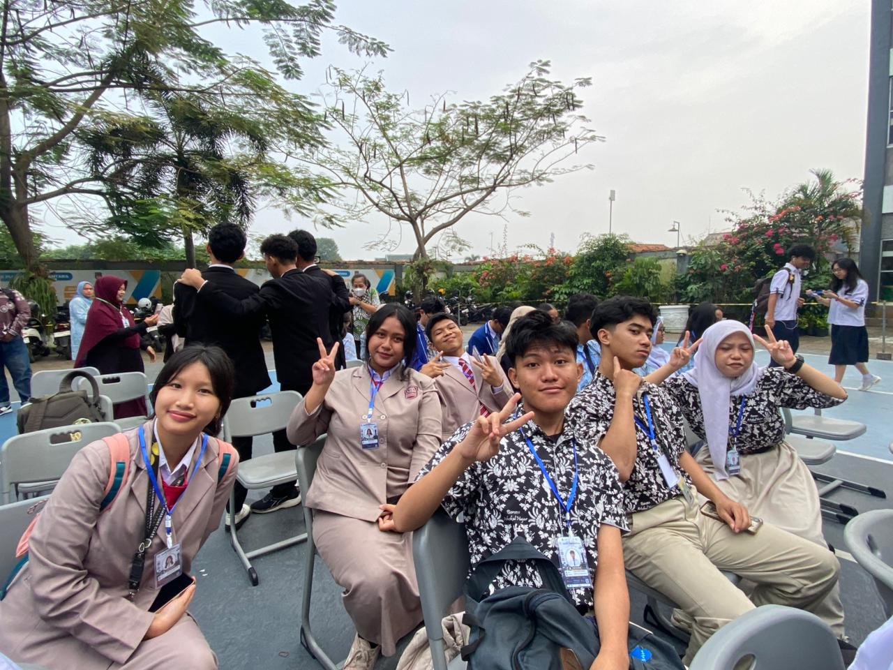
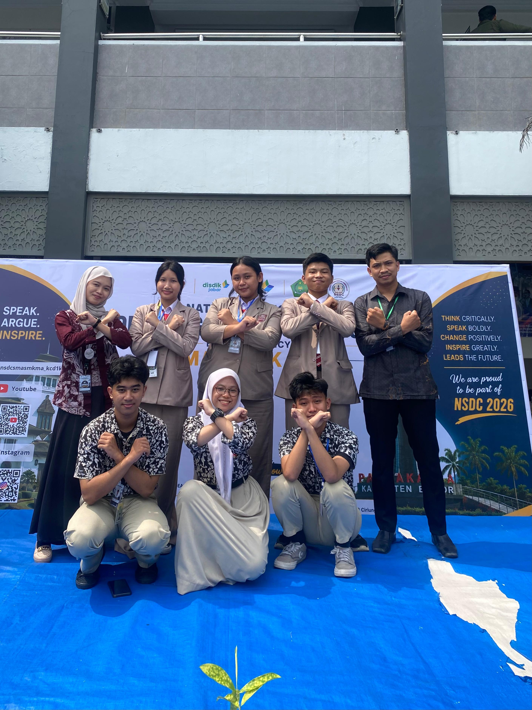
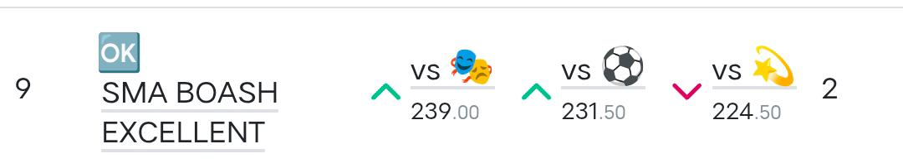
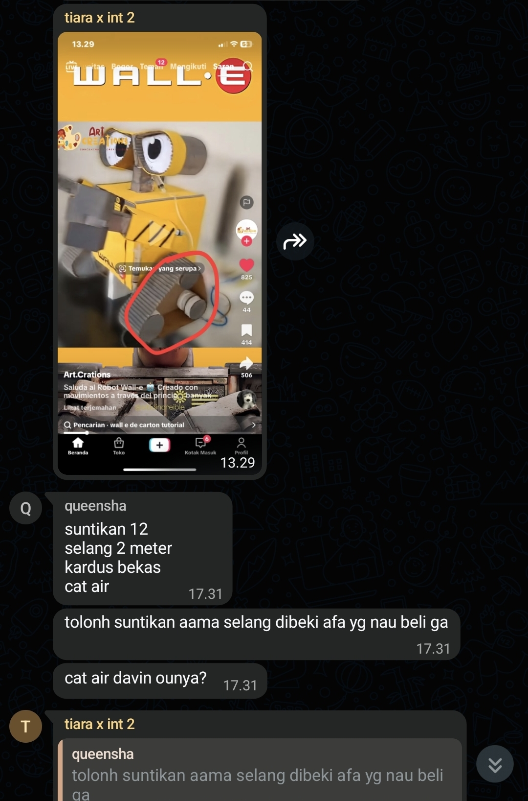
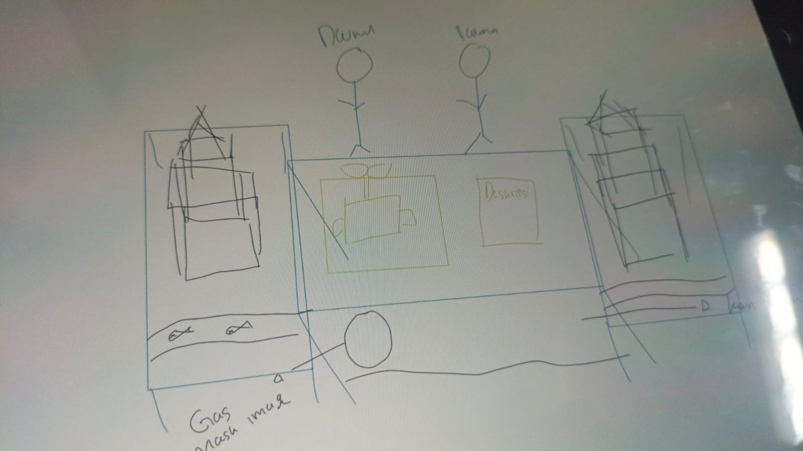
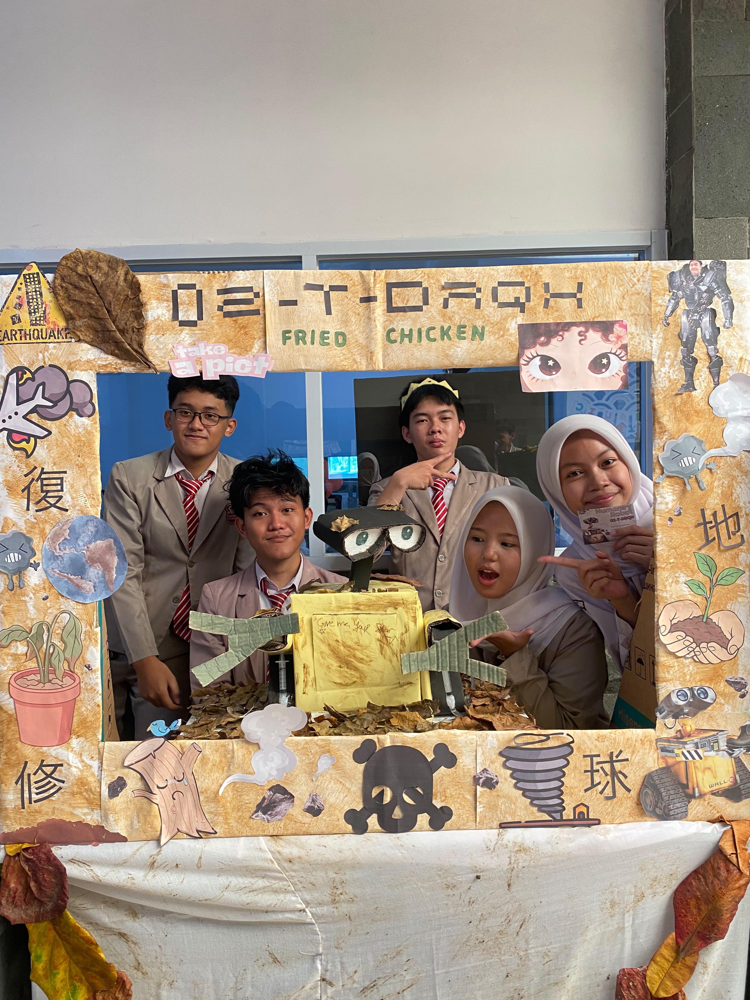
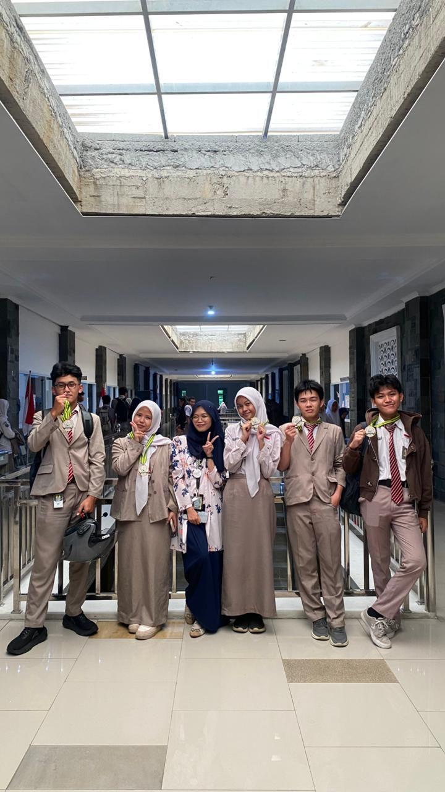
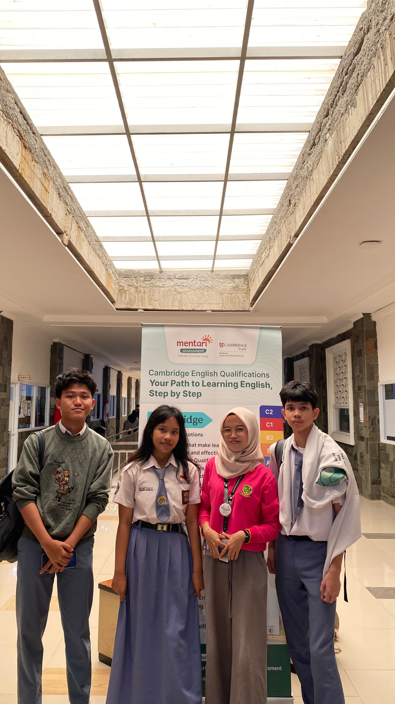

Proyek 1
NSDC Debate
Perjalanan saya dan tim di NSDC 2026: dari diskusi pertama, latihan, hari pertandingan, sampai hasil akhir.
Portofolio pelajar
Tiga kegiatan yang saya ikuti, lengkap dengan tahapan dan hasil akhirnya.
Ketuk “Lihat hasil proyek” untuk membuka tahapannya. Satu proyek terbuka dalam satu waktu, dan bisa ditutup kembali.
Proyek 1
Perjalanan saya dan tim di NSDC 2026: dari diskusi pertama, latihan, hari pertandingan, sampai hasil akhir.
Empat tahap yang kami lalui, hingga mencapai hasil akhir dari lomba ini.

Awal
Tim berkumpul untuk pertama kalinya. Kami mulai membahas mosi untuk latihan, sistem debat yang digunakan dalam lomba, dan menentukan jadwal latihan

Latihan
Kami berlatih dengan mosi yang diberikan oleh para guru kami. kami berlatih debat dengan sesama tim hingga melakukan debat dengan para guru kami


Hari pertandingan
Hari pertandingan NSDC 2026 tiba

Hasil
Tim kami menutup kompetisi di peringkat ke-9 dengan skor 239,00, 231,50, dan 224,50 pada tiga ronde.
Setiap ronde melatih saya untuk berpikir secara cepat dengan segala argumen yang tak terduga dari lawan kami, kompetisi ini juga membuat saya berbicara lebih percaya diri, dan bekerja sama dengan mengandalkan satu sama lain sebagai tim.
Proyek 2
Dokumentasi proyek ESS kelas 11, mulai dari konsep utama dan konsep stand sampai hari pelaksanaan dan hasilnya.




Proyek 3
Dokumentasi saat mengikuti CEQ Test.
